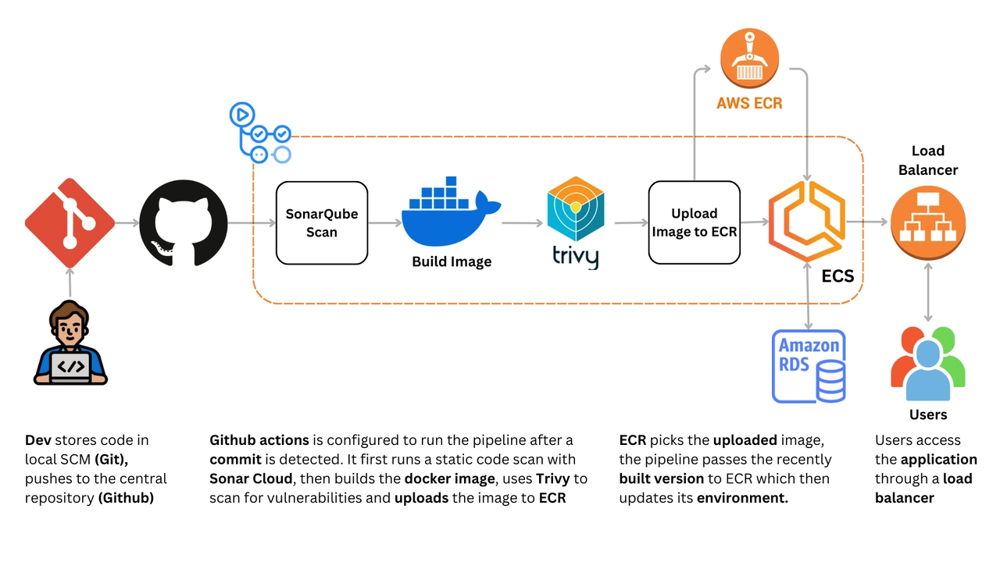
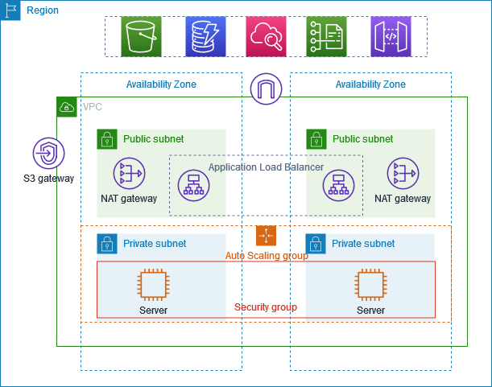
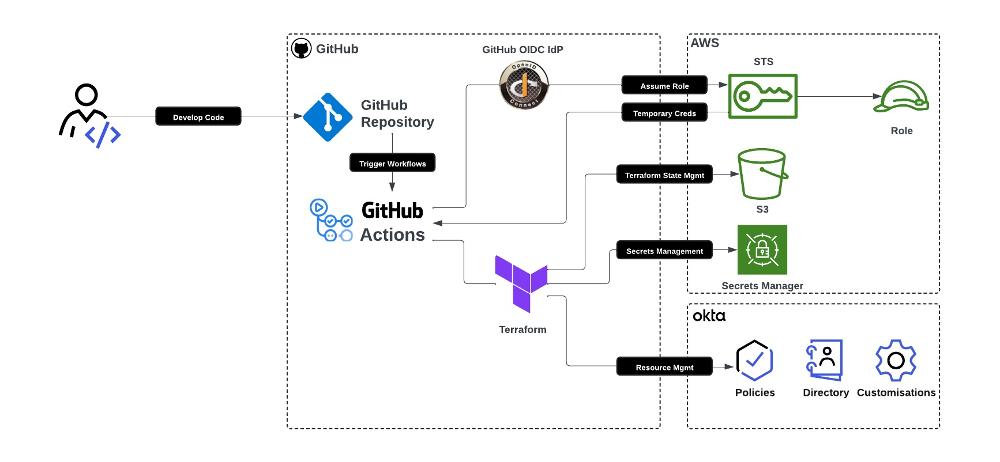

📌 Professional Summary
DevOps Engineer with 2+ years of hands-on experience designing, automating, and operating cloud-native infrastructure on AWS. Strong focus on reliability, security, and scalable delivery systems.
🧠 Core Skills
AWS (EC2, S3, RDS, VPC, IAM)
Docker & Kubernetes
Terraform (IaC)
GitHub Actions / Jenkins
Linux & Bash
Nginx / Ingress
Prometheus & Grafana
🔁 CI/CD Pipeline
Git Push
GitHub Actions
Docker Build
Security Scan
AWS EC2 / EKS

☁ AWS Production Architecture

Highly available AWS architecture with VPC isolation, autoscaling, CI/CD integration, and monitoring.
☸ Kubernetes Architecture

🌍 Terraform Workflow

📦 Key Projects
Production CI/CD Pipeline
- Reduced deployment time by 60%
- Implemented automated rollback
- Secrets managed via GitHub Secrets
Kubernetes Microservices Platform
- Zero-downtime rolling deployments
- Horizontal Pod Autoscaling
- Nginx Ingress Controller